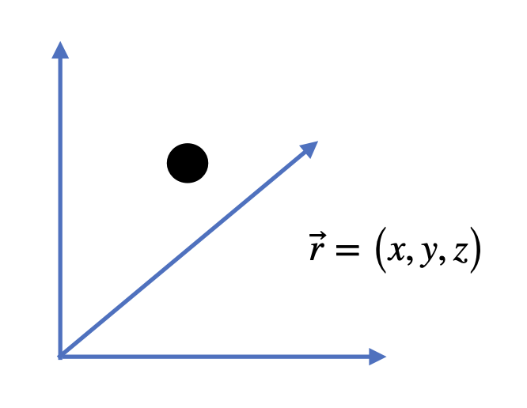
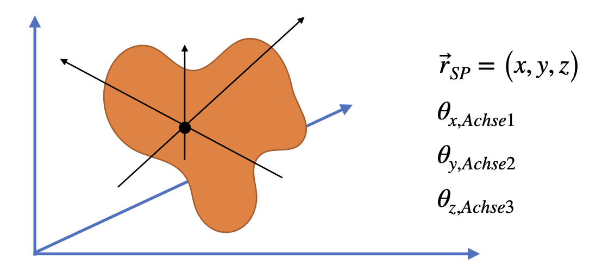

5. Rotationsenergie#
Rotationsenergie ist ein Teil der kinetischen Energie eines starren Körpers, der um einen Punkt rotiert. Die kinetische Energie des starren Körpers lässt sich in einen Translations- und einen Rotationsanteil zerlegen.
Massenpunkt |
starrer Körper |
|---|---|
 |
 |
Die Position eines Massenpunktes lässt sich durch drei Koordinaten im Raum beschreiben (\(\vec{r} = \left( x,y,z \right)\)). N Massenpunkte haben somit \(3\cdot N\) Koordinaten. Da die Massenelemente im starren Körper einen festen Abstand zueinander haben, reduziert sich die Anzahl der zur Beschreibung notendigen Koordinaten. Die Bewegung lässt sich insgesamt durch sechs Koordinaten beschreiben: Drei Koordinaten beschreiben die Position des Schwerpunktes (\(\vec{r}_S = \left( x_S,y_S,z_S \right)\)), drei Koordinaten beschreiben die Winkel der Rotation im Raum (\(\vec{r} = \left( \phi_x, \phi_y,\phi_z \right)\)).
Die kinetische Energie ist gegeben durch
\(E_{kin} = \frac{1}{2} \, m \, v_S^2\)
Für die Energie der Drehbewegung gilt
\(E_{rot} = \frac{1}{2} \, \Theta \, \omega^2\)
Für die Energieerhaltung der Rotationsenergie mehrerer Massen gilt bei konstantem Abstand zueinander
\(E_{rot} = \sum_i E_{rot,i} = \sum_i \frac{1}{2} \, \Theta_i \, \omega^2\)
5.1. Beispiel: Schwungradspeicher Nasa G2 flywheel#
Schwungradspeicherung ist eine Methode der mechanischen Energiespeicherung, bei der ein Schwungrad auf eine hohe Drehzahl beschleunigt und Energie als Rotationsenergie gespeichert wird. Die Energie wird zurückgewonnen, indem der Rotor an einen elektrischen Generator gekoppelt und dadurch abgebremst wird. Es handelt sich um eine kurzfristige Speicherung, Sekunden bis max. Minuten, sonst treten zu hohe Reibungsverluste auf.
Da \(E_{rot} = \frac{1}{2} \, \Theta \, \omega^2 = \frac{\left( 2 \pi \right)^2}{2} \, \Theta \, f^2\) können hohe Speicherenergien durch eine hohe Masse und Radius (grosses Trägheitmoment, \(\Theta \propto m \, r^2\) oder eine hohe Drehzahl (Frequenz \(f\)) erreicht werden.
{kind=link}
Fig. 5.7 Abbildung: Nasa, Technische Daten: G2 Flywheel Module Design Ralph H. Jansen, Timothy P. Dever (2006) https://ntrs.nasa.gov/citations/20060028492#
Das G2 Flywheel der NASA ist ein Demonstrationsprojekt mit dem Ziel es in der Energiespeicherung in der Luft- und Raumfahrt einzusetzen.
Technische Daten:
max.Drehzahl \(60.000 \, \frac{1}{min} = 1000 \, Hz\) Gewicht \(m=23 \, kg\)
Gesamte kinetische Energie \(E_{rot} = \frac{1}{2} \Theta \omega^2 = 591 \, Wh = 2.128 \cdot 10^6 J\)
Nutzbare kinetische Energie \(E_{rot, Nutz} = \frac{1}{2} \Theta \omega^2 = 525 \, Wh = 1.89 \cdot 10^6 J\)
Annahme: Schwungrad ist Vollzylinder \(\Rightarrow \Theta = \frac{m}{2} r^2\) mit \(\omega = 2 \pi f\) ist dann \(E_{rot} = \frac{\Theta}{2} \left(2 \pi f\right)^2 = 2\Theta \left( \pi f \right)^2 \Leftrightarrow \Theta = \frac{2 E_{rot}}{(2 \pi f)^2} = \frac{m}{2} r^2 \Leftrightarrow r = \sqrt{\frac{E_{rot}}{m}} (\pi f)^{-1} \approx 0.1 \, m \)
bei einem Trägheitsmoment von \(\Theta = \frac{2 E_{rot}}{(2 \pi f)^2}\approx 0.11 \, kgm^2\).
Die minimale Drehzahl ist erreicht, wenn die gesamte Nutzenergie entnommen wurde
\(E_{rot, min} = E_{rot}-E_{rot, Nutz} = 66 Wh \Rightarrow f_{min} = \sqrt{\frac{E_{rot,min}}{2 \pi^2 \Theta}} \approx 334 \, \frac{1}{s} \approx 20.000 \, \frac{1}{min}\)
Angegeben wird für die Leistung
\(P \left(60.000 \, \frac{1}{min} \right) = 3 \, kW\) und \(P \left(20.000 \, \frac{1}{min} \right) = 1 \, kW\)
Leistung \(P = \frac{\Delta E}{\Delta t} \Leftrightarrow \Delta t = \frac{\Delta E}{P} \)
\(\Rightarrow\) es können \(\Delta t = \frac{525 \cdot 3600 \, Ws}{2000 \, W} \approx 15 \, min\) überbrückt werden, wenn Reibungseffekte vernachlässigt werden.